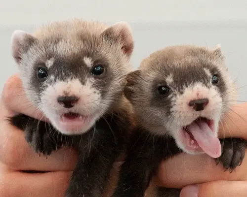

Community News
New ferrets to be welcomed at the Perth zoo!
Perth Zoo is thrilled to announce the arrival of a litter of adorable baby ferrets, bringing joy and excitement to visitors and staff alike. The proud parents, Luna and Bandit, welcomed their new additions in a heartwarming moment captured on the zoo's live camera feed. The six playful kits, affectionately named Peanut, Jellybean, Marshmallow, Toffee, Sprout, and Willow, are already stealing hearts with their playful antics and boundless energy. Visitors can now catch glimpses of the tiny ferret family as they explore their cozy nest under the watchful eye of Luna and Bandit. Zookeepers are providing round-the-clock care to ensure the health and wellbeing of the newborns, who are thriving under their expert supervision. The birth of these precious ferrets is not only a cause for celebration but also an important milestone for the conservation of this charismatic species. Perth Zoo invites everyone to join in the excitement and witness the adorable baby ferrets as they grow and discover the world around them. Stay tuned for updates and exclusive behind-the-scenes footage of these charming additions to the zoo family!
Ferrets up for adoption

Attention all ferret enthusiasts! Perth's local animal shelter is thrilled to announce a special ferret adoption event coming up this weekend. With a variety of furry friends eagerly awaiting their forever homes, this is the perfect opportunity for anyone looking to add a playful companion to their family. From energetic kits to cuddly adults, there's a ferret for every personality and lifestyle. Experienced staff will be on hand to provide guidance and answer any questions, ensuring that each adoption is a perfect match. Whether you're a seasoned ferret owner or considering welcoming your first one into your home, this event promises to be a heartwarming experience for all involved. Join us in giving these lovable creatures the loving homes they deserve! Don't miss out on this chance to make a difference in the life of a furry friend. Visit the shelter this Saturday and Sunday to meet your new ferret companion and embark on a journey of love and companionship that will last a lifetime.